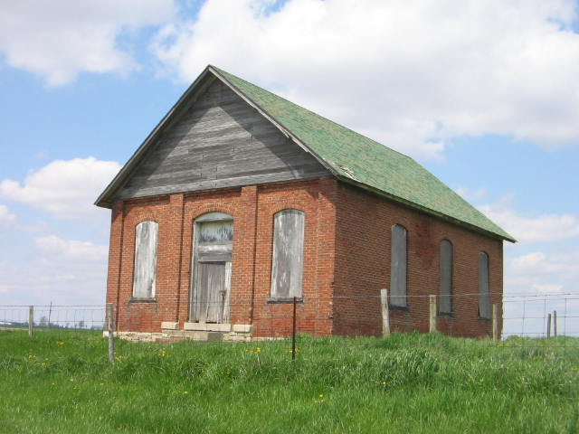
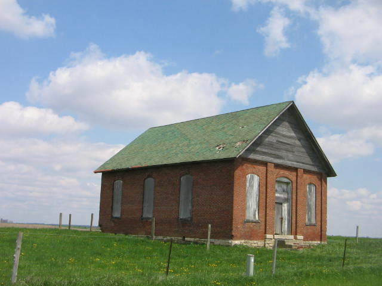
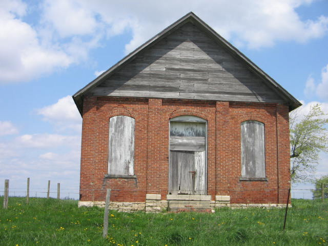

The schoolhouse on Selsor Moon Road in Madison County is said to be haunted by the ghosts of children killed in an Indian raid. My now ex-girlfriend told me about this one. She said her grandmother has seen balls of light floating around the abandoned building late at night.
One incredibly freezing cold December night, Hoss, my then girlfriend, and I drove in his truck down Selsor Moon Road and parked to investigate the place. It was difficult to access because there's a fence around the place, but the owner didn't mind leaving an unlocked gate.

First we checked out the little cemetery behind the schoolhouse. My girlfriend theorized that if there had been some big tragedy, the dates on many of the gravestones would be the same. We didn't notice this. We did, however, hear some kind of weird rustling on the ground which made us want to leave the graveyard area.
Next we unwrapped the wire around the front door to the schoolhouse and checked it out inside. It was completely trashed, filled with piles of useless scrap wood. None of my pictures came out very well, which explains why *my* only shot of the schoolhouse is this beauty:

The others seen here, crystal-clear daylight snapshots, were generously contributed by friend of the site Dan Dudzinski.
Nothing ghostly really happened, except for that strange sound in the graveyard. I'm sure the place would be much scarier if it hadn't been so damn cold outside when we investigated it. Or maybe it was even scarier because whatever was moving through the brittle wind-whipped grass couldn't have been any animal I've ever met, considering the bone-cracking cold. I'd like to add that Selsor Moon Road is one of the weirdest-named roads I've seen--not as weird as No Name Road down in Ross County, but weird.

Back